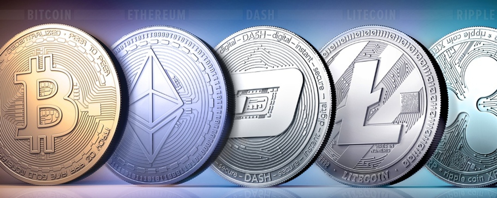

Виды криптовалют
На рынке существует множество криптовалют. Коротко опишем их виды.
Монеты, созданные для платежейМожно инвестировать в них или потратить их на оплату товаров и услуг. Самая популярная валюта — Bitcoin (BTC).
Функциональные монеты блокчейн-платформСамая известная криптомонета такого рода — Ethereum. Она поддерживает смарт-контракты, поэтому на её блокчейн-платформе запущено много приложений и игр.
Внутренние токены торговой площадкиЭто цифровая валюта криптобиржи. Выпускается только крупными биржами. Чаще всего внутренние токены используют для оплаты биржевых сборов или комиссий за транзакции. Популярны, например, Binance Coin (BNB) и EXMO Coin (EXM).
Служебные токеныИх выпускают в ограниченном количестве, чтобы привлечь в проект инвестиции. После запуска проекта служебные токены используют для управления им: владельцы токенов могут участвовать в решениях о развитии платформы. Это стимулирует их не продавать валюту.
Например, проект Uniswap выпустил токены UNI для привлечения инвестиций на начальном этапе. Сейчас Uniswap стала крупнейшей из децентрализованных бирж, и владельцы UNI получили на ней преимущество.
КриптотоварОтдельный вид активов — NFT, или невзаимозаменяемые токены. Если один биткоин всегда равен другому биткоину, то с NFT это так не работает. Каждый токен уникален, имеет собственный спрос и цену. В виде NFT выпускают произведения искусства, объекты для блокчейн-игр и многое другое. Подробнее об этом можно прочитать в статье об NFT.
СтейблкоиныОни привязаны к физическому активу и равны его стоимости. Поэтому их используют как средство платежа и сбережений. Самый известный стейблкоин — Tether (USDT). Его цена равна стоимости доллара — разница не превышает 1%.
Типы криптовалют
Среди множества криптовалют четыре примечательных примера включают биткойн (BTC) и популярный эфир альткойнов (ETH), Binance Coin (BNB) и Tether (USDT).
Биткойн (BTC)BTC — самая популярная криптовалюта. Он использует механизм консенсуса, называемый доказательством работы (PoW), где майнеры конкурируют за проверку транзакций и поддержание работы сети. Кроме того, ограниченный запас BTC в 21 миллион монет делает его относительно дефицитным и помогает поддерживать его стоимость с течением времени.
Эфир (ETH)ETH — вторая по популярности криптовалюта, запущенная в 2015 году Виталиком Бутериным и его командой. Помимо передачи стоимости, он обеспечивает возможность программирования с помощью смарт-контрактов.
Как и BTC, ETH изначально использовал механизм консенсуса PoW, но перешел на более экологичную и энергоэффективную модель Proof-of-Stake (PoS). Этот сдвиг позволил пользователям проверять транзакции и защищать сеть, размещая свои ETH, а не через узлы, использующие вычислительную мощность.
Тетер (USDT)USDT — это стейблкоин с привязкой к доллару США, запущенный в 2014 году компанией Tether Limited Inc. Стейблкоины — это криптовалюты, предназначенные для поддержания постоянной стоимости относительно резервного актива, такого как фиатная валюта. В случае USDT каждый токен обеспечен эквивалентной суммой активов, хранящихся в резервах компании. В результате USDT предлагает преимущества криптовалюты, сводя к минимуму колебания цен.